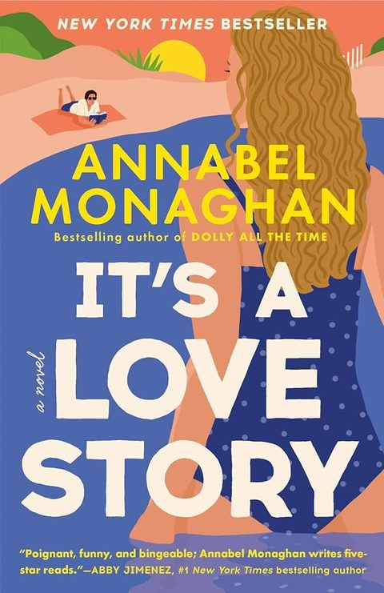

It's a Love Story
Synopsis
A Hollywood executive has to team up with a cinematographer she can’t stand to turn a script she loves into a real movie.
The Fourth-Date Dress
Summary of chapter 1
Jane, a Los Angeles studio executive and former child actress, is getting ready for the biggest meeting of her career. She has found a script called “True Story” that she is certain will finally be turned into a movie, and she treats the morning like a date: she wears her red “fourth-date” dress, saved for the moment a relationship gets serious, and tells her roommate Clem she is basically in love with the script.
At the office, Jane’s confidence is shaken by an elevator ride with Dan Finnegan, a cinematographer she blames for sinking her last project. When she brags about her new script, she learns that Dan is meeting her boss about the very same film, and that he wants to work on it too.
He suggests that if she can act like a normal person, the two of them can make the movie together. Jane, flustered and furious, watches the elevator doors close on him.